01
Recursive Divisions · Marker
- Seed
- AA-20261103-01-90942
- Series
- Recursive Divisions
- Format
- Landscape · 1400 × 1000
- Additional φ pull
- 87%
- Material
- Marker
- Palette
- cmyk
Can one number compose a drawing?
18 drawings made on 3 November 2026. Different materials, different compositions, and room to make each one your own.


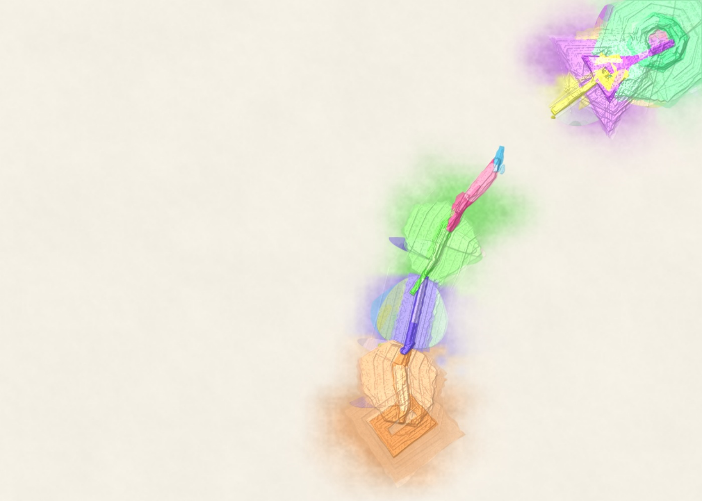
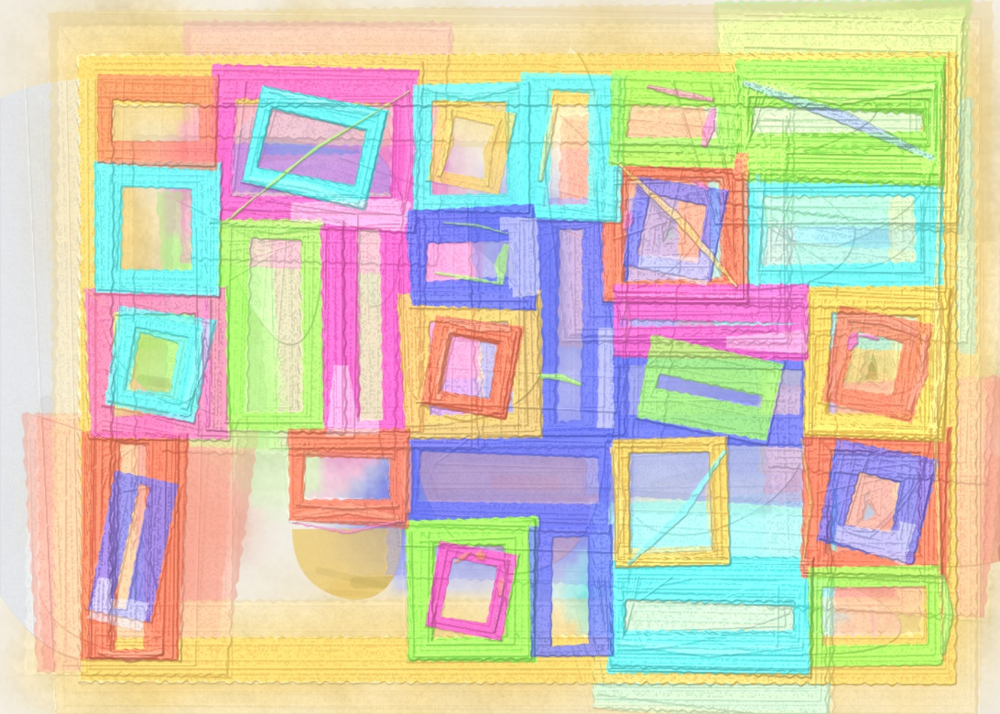
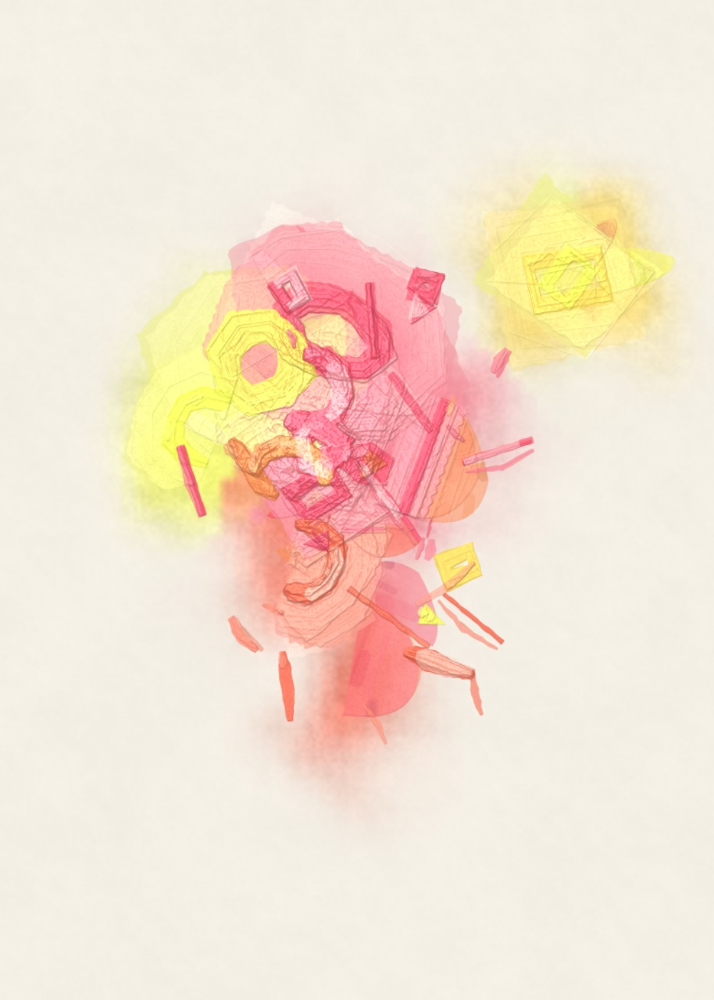
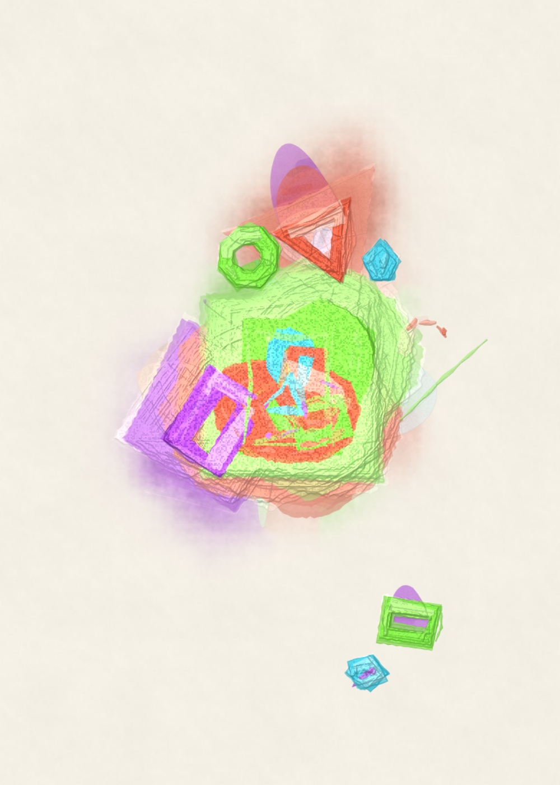
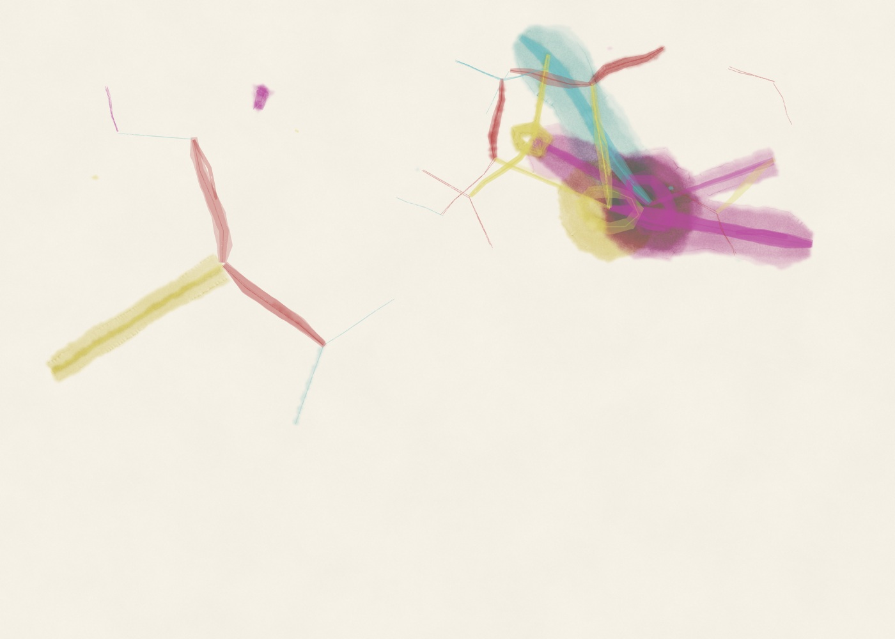
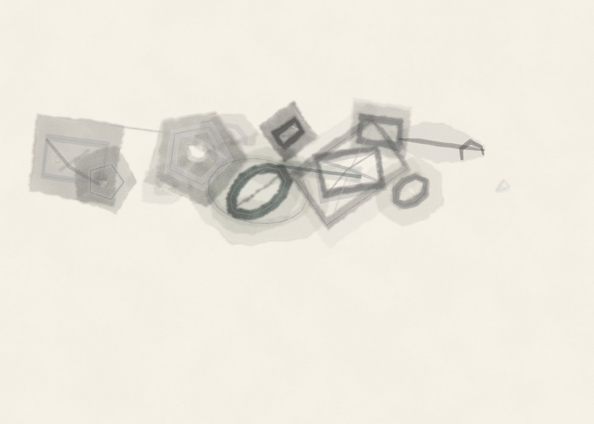
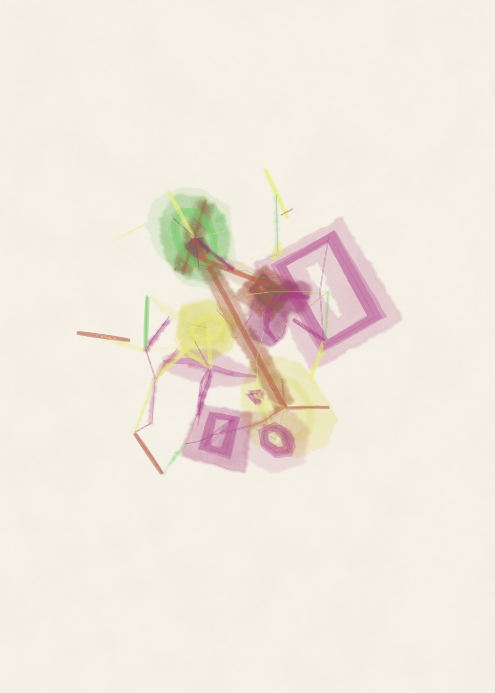
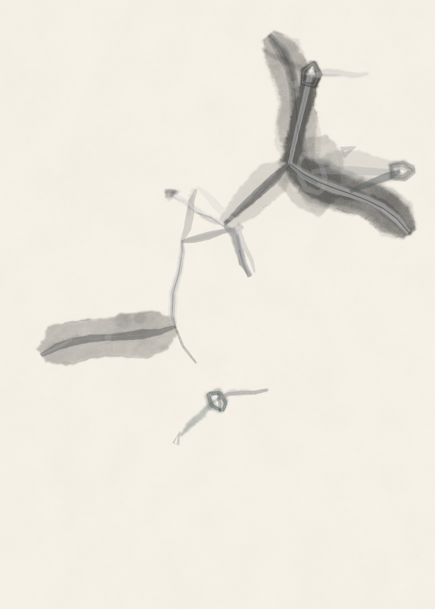
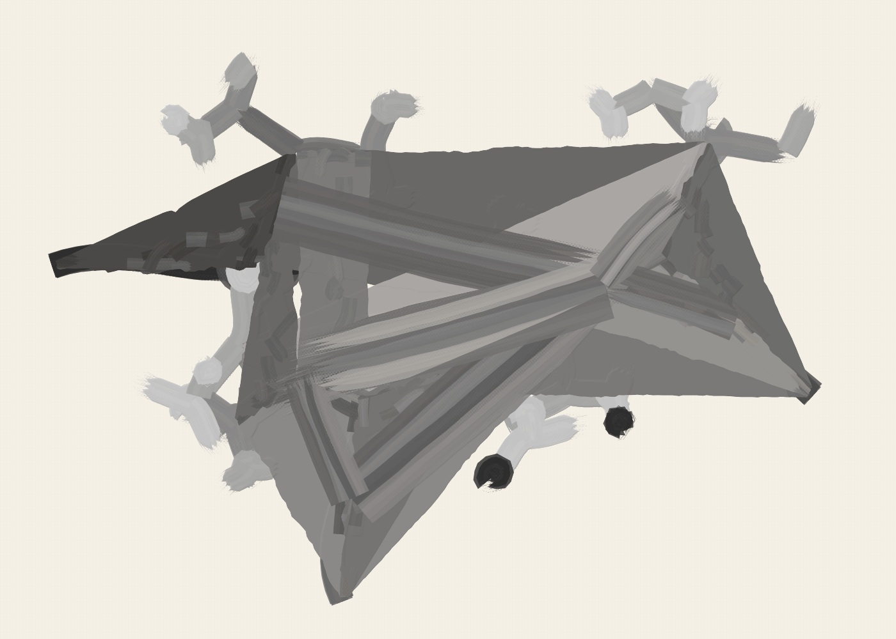
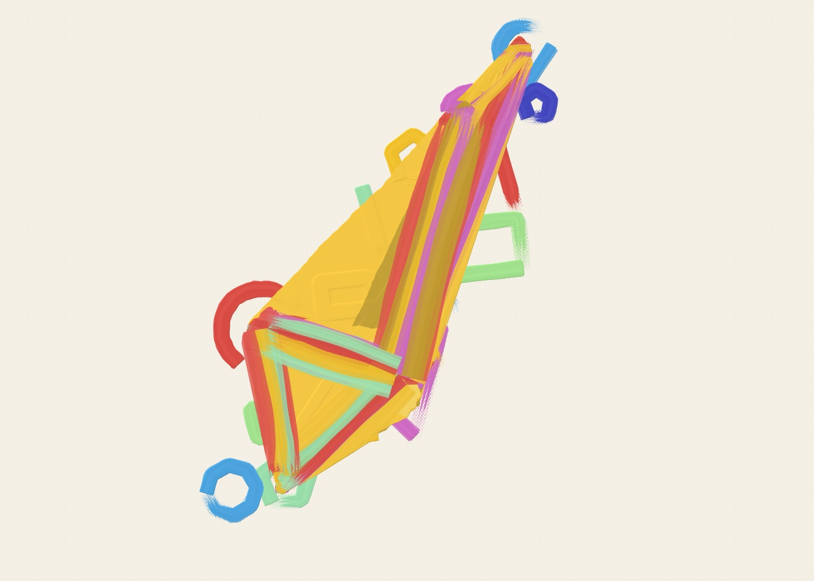
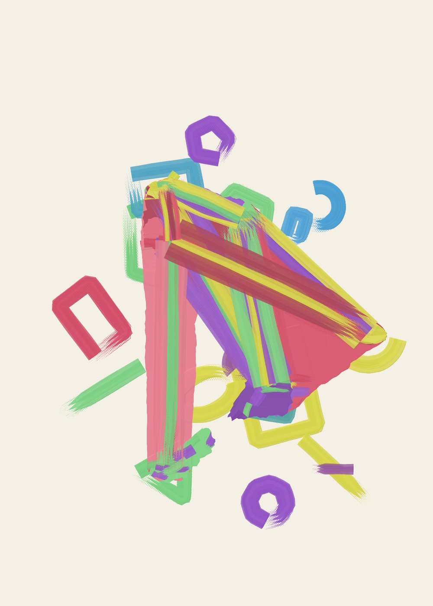
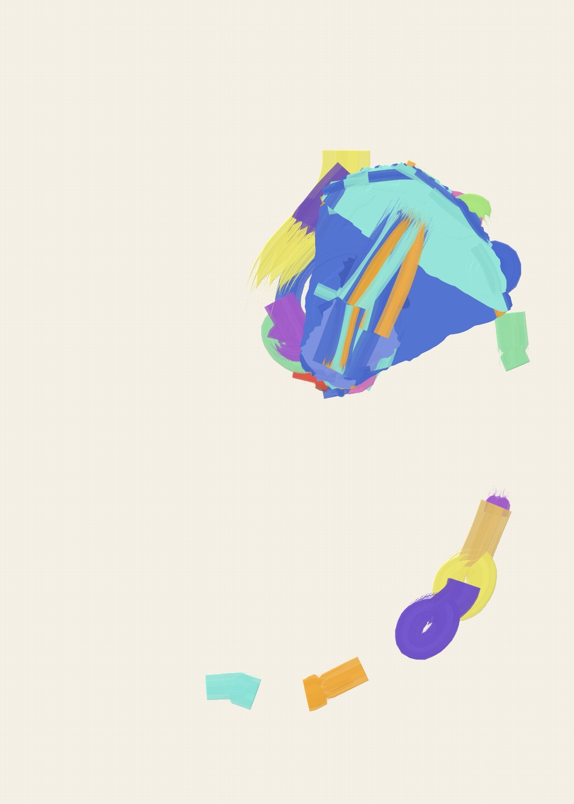
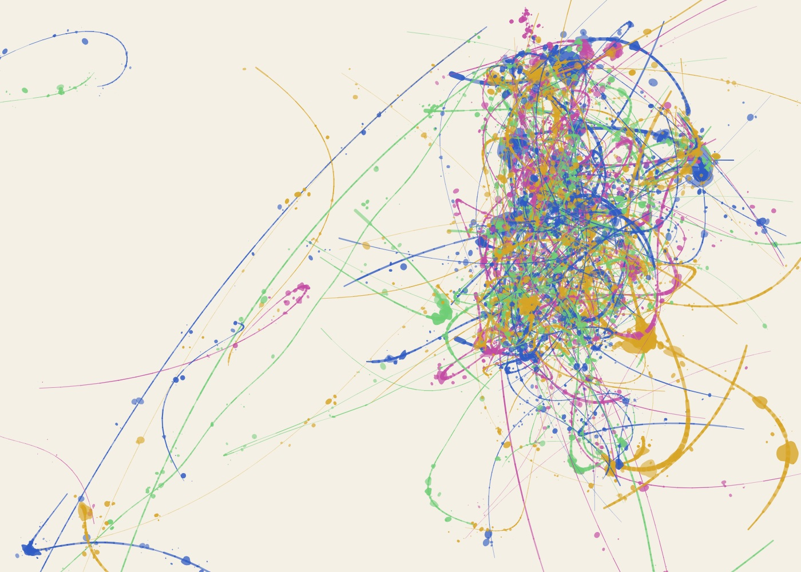
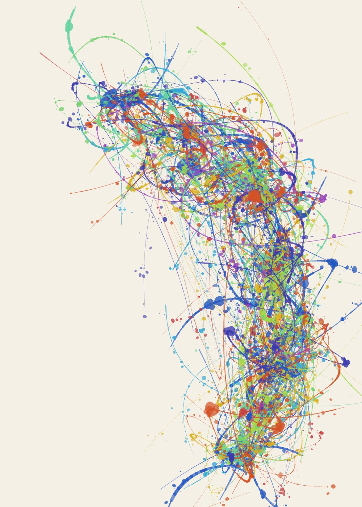
The golden ratio helps arrange each drawing. The material changes how those arrangements feel. Open a piece to see its settings, then change whatever you like.
MAKE YOUR OWN →